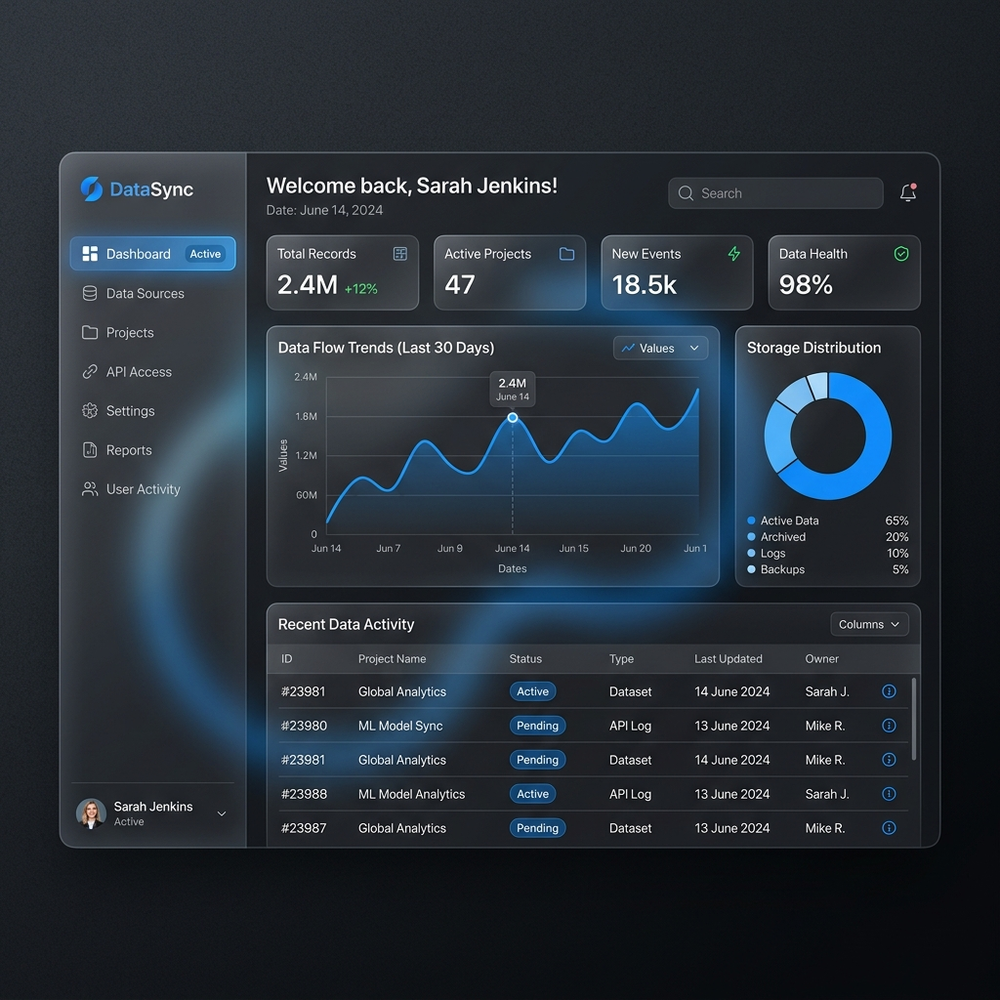
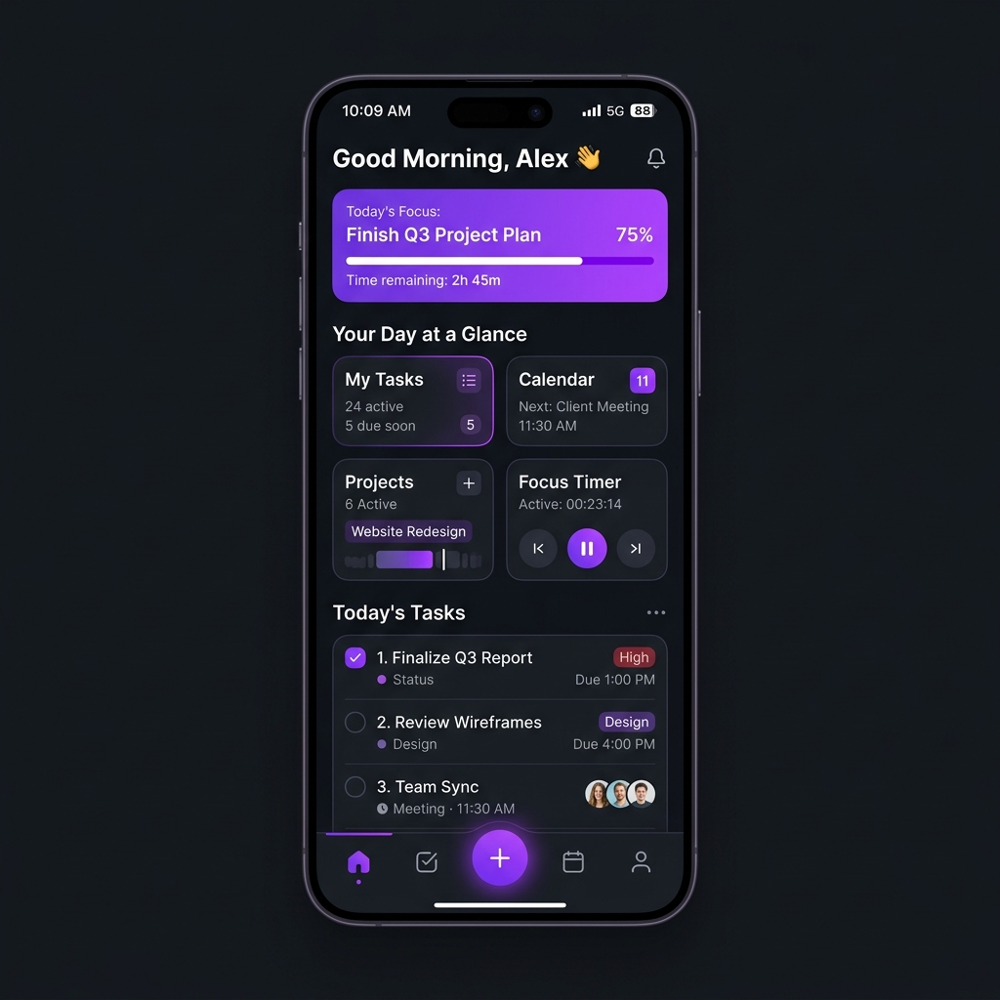
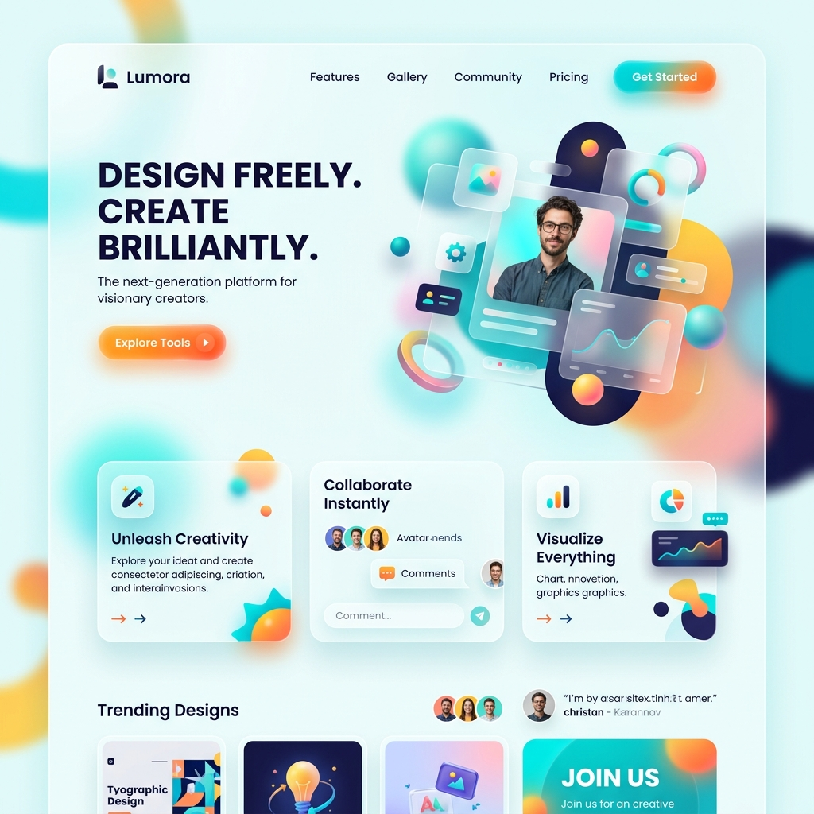

Halo, perkenalkan! 👋
Rafli Septyo Kurniawan
Saya adalah mahasiswa Sistem Informasi yang sangat bersemangat di bidang Web Development. Berkomitmen untuk menciptakan solusi digital yang optimal, memukau, dan intuitif bagi pengguna.
.jpg)
Halo, perkenalkan! 👋
Saya adalah mahasiswa Sistem Informasi yang sangat bersemangat di bidang Web Development. Berkomitmen untuk menciptakan solusi digital yang optimal, memukau, dan intuitif bagi pengguna.
Saya adalah mahasiswa semester 8 jurusan Sistem Informasi di Universitas Mercu Buana (Angkatan 2022). Saya berminat merancang aplikasi modern mulai dari kodingan paling dasar hingga integrasi sistem canggih.
Bagi saya, UI/UX (User Interface / User Experience) sama pentingnya dengan keandalan backend. Tujuan karir saya adalah menjadi Web Developer yang mampu menjembatani kualitas fungsional dengan antarmuka yang bersahabat.
S1 Sistem Informasi (IPK 3.51/4.00)
Jurusan Ilmu Pengetahuan Sosial (IPS)
Cisco
Oracle
Keahlian Bahasa Berbasis Objek
Keahlian Database Tingkat Lanjut

Aplikasi web interaktif dengan HTML/CSS dan backend PHP. Dilengkapi fitur Autentikasi yang aman dan manipulasi data dinamis ke database MySQL secara langsung.

Mengembangkan kerangka antarmuka native untuk aplikasi mobile menggunakan teknologi Flutter. Desainnya menitikberatkan pada aliran navigasi yang cepat untuk pengguna.

Pendekatan desain web dengan mengutamakan User Experience. Melalui Figma, prototipe direkayasa semirip mungkin dengan produk akhir sebelum masuk tahap ngoding.